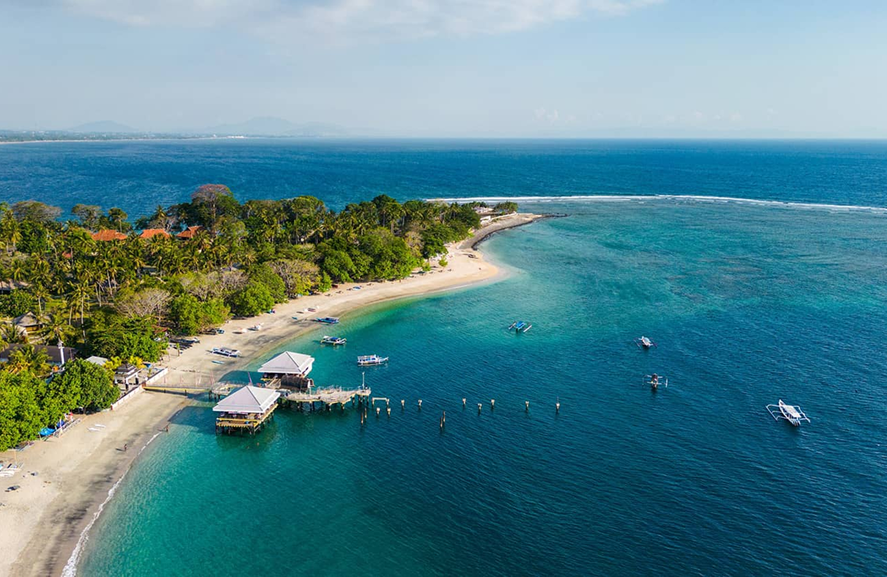

Top 3 Destination in Lombok

Selong Belanak Beach, South Lombok
Rinjani Mountain, East Lombok

Gili Meno, North Lombok
Lombok is a beautiful island in Indonesia, known for its stunning natural landscapes, rich cultural heritage, and warm hospitality. The local traditions, influenced by the unique Sasak culture, are reflected in its vibrant festivals, music, and handicrafts. Its culinary delights, with bold flavors and aromatic spices, offer a true taste of Indonesian cuisine.
Selong Belanak Beach, South Lombok
Rinjani Mountain, East Lombok
Gili Meno, North Lombok
Plecing Kangkung

Sate Bulayak

Nasi Puyung